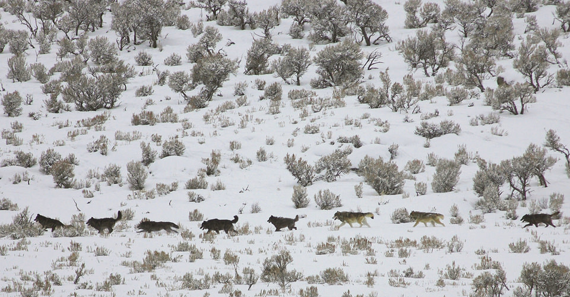

How a once-persecuted predator is returning to the US
With the environmental movement of the 60's and 70's, public attitudes towards wolves shifted.
Wolves were protected under the Endangered Species Act in 1976.

In 1995 and 1996, wolves were reintroduced into Yellowstone National Park and central Idaho.
In 1998, wolves were released into eastern Arizona.
Their population has rebounded in the Northern Rockies and Great Lakes,
and is slowly growing in the Pacific Northwest and Southwest.